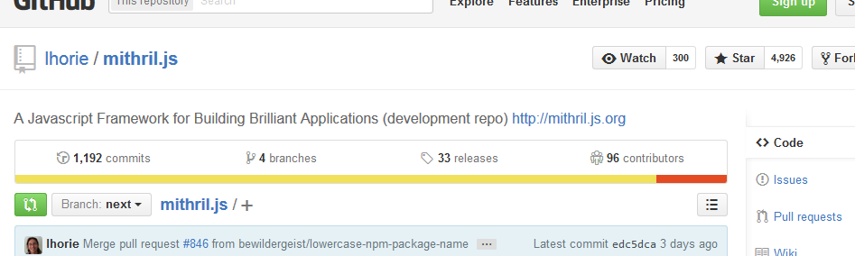
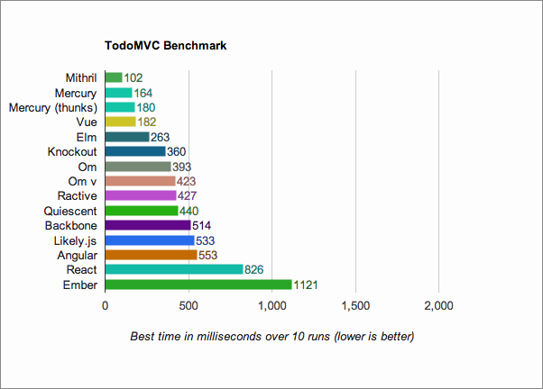

Leo Horie
Software Engineer, author of Mithril.js
What is Mithril.js?


Why Mithril.js?
Once upon a time...
Wasn't happy with state of
Javascript frameworks:
- Complexity
- Awful docs (if any)
- Performance issues
Design Goal: Pragmatic
Case Study
Implements a simple Hacker News / Reddit clone
It's like TodoMVC.com, but more realistic
(has ajax, dynamic routing, recursive views)
Dependencies:
| Backbone:* | jQuery, Underscore |
| Ember: | jQuery, Ember Template Compiler** |
| Angular: | Angular Route, Angular Resource |
| Mithril: | - none - |
| React: | Grapnel***, Reqwest, JSX Transformer** |
| Vue: | Vue Router, Reqwest |
* Classical-style app. A modern app would use more libraries
** Normally uses a build system
*** According to project author, React Router too "weird"
Design Goal: Fast
TodoMVC Benchmark: add 100 items, then delete them
Footprint (min + gzip)
| Angular.js | 37 kb |
| Backbone.js* | 45 kb |
| Ember.js* | 75 kb |
| Mithril.js | 7 kb |
*including dependencies
Design Goal: Simple
What makes an API "simple"?
Relevance
Ember: Almost a hundred classes
VanillaJS: Zero LOC
Paretto principle:
"get 80% results with 20% effort"
Mithril API surface
~20 methods
Clarity
342 kb of documentation
- Prose
- Examples
- API
Familiarity
"Familiar" is not necessarily "simple"
...but it helps reduce learning curve
Some examples
Getter-Setters
Similar to variables
//a variable
var thing = "Macbook";
console.log( things ); // "Macbook"
thing = "iPhone";
console.log( things ); // "iPhone"
//a getter-setter
var thing = m.prop( "MacBook" );
console.log( thing() ); // "Macbook"
thing( "iPhone" );
console.log( thing() ); // "iPhone"
Promises
Makes Async similar to Sync
var things = m.request({method: "GET", url: "/things.json"}) //get a list of things
.then(list => list.slice(0, 10)) //then slice it
.then(list => list.slice(0, 3)); //then slice it some more
e.g. Compare to jQuery
var things = $(".things") //get a list of things
.slice(0, 10) //then slice it
.slice(0, 3); //then slice it some more
Virtual DOM
Just like HTML, but in Javascript
m("div", [ // <div>
m("a", {href: "http://google.com"}, "Google") // <a href="http://google.com">Google</a>
]) // </div>
Similar to CSS, too
m(".panel.panel-default", [
m(".panel-heading", [
m("h3.panel-title", "Panel title")
]),
m(".panel-body", [
"Panel content"
])
])
<div class="panel panel-default">
<div class="panel-heading">
<h3 class="panel-title">Panel title</h3>
</div>
<div class="panel-body">
Panel content
</div>
</div>
Magic trick: mind reading
"Onoes, can't I use angled brackets?"
<!-- likey -->
<ul class="things">
<li>iPhone</li>
<li>Macbook</li>
</ul>
// no likey
m("ul.things", [
m("li", "iPhone"),
m("li", "Macbook"),
])
(Yes, you can.)
More generically
Why reinvent variables, ajax callbacks and HTML?
They work just fine
Functional Composition

Fancy term for taking two functions
and putting them together
to do something more interesting
var data = m.prop();
// ...
m("input", {
oninput: m.withAttr("value", data),
value: data()
});
You already know .map, .filter, etc
var summaryView = function(item) {
return m(".summary", [
m("h3", item.name),
m(".summary-body", item.description)
]);
};
// ...
m(".summaries", projects.map(summaryView));
Promises will be part of ES6
var now = Date.now();
var pastItems = function(items) {
return items.filter(function(item) {
return item.date < now;
});
};
var log = function(value) {
console.log(value);
return value;
};
m.request({method: "GET", url: "/api/projects"})
.then(log) // log all projects
.then(pastItems) // filter past projects
.then(log); // log past projects only
TL;DR: it's possible to make a small but useful API
by taking advantage of functional composition
But seriously, why the &*%# mess with HTML?
- Familiar syntax
- Designers can use it
Templates can use Javascript tooling ecosystem
- Build systems: Grunt, Gulp, Webpack
- Modularity: AMD, Browserify, Rollup.js
- Linters: JSHint, ESLint
- Minifiers: Uglify.js, Google closure compiler, etc
- Static analysis: Facebook Flow, Typescript
...and on top of that, you can pick your sugar
// Vanilla Javascript
m("ul.things", [
m("li", "iPhone"),
m("li", "Macbook"),
])
# Coffescript
m "ul.things",
m "li", "iPhone"
m "li", "Macbook"
// React's JSX
<ul class="things">
<li>iPhone</li>
<li>Macbook</li>
</ul>
HTML is bad at organizing
<!-- 2000 lines of this in one HTML file... -->
<script id="foo" type="x-tmpl-mustache">
<ul class="things">
<li>iPhone</li>
<li>Macbook</li>
</ul>
</script>
<script id="bar" type="x-tmpl-mustache">
...
</script>
<script id="baz" type="x-tmpl-mustache">
...
</script>
...
Better: Component-oriented architecture
One concern per file
var Project = require("models/project");
var List = {
controller: function() {
this.projects = Project.list();
},
view: function(ctrl) {
return m("table", [
ctrl.projects().map(function(item) {
return m("tr", [
m("td", item.id),
m("td", item.name)
])
})
])
}
};
Virtual DOM = Retained Mode
Instead of saying when to add, remove, update stuff,
describe what UI should look like
(Let the framework do the heavy lifting)
Retained Mode + Turing Completeness = powerful tools
- Reusability via smart/dumb components
- Scoped CSS (via JSS, J2C)
- Declarative DSLs